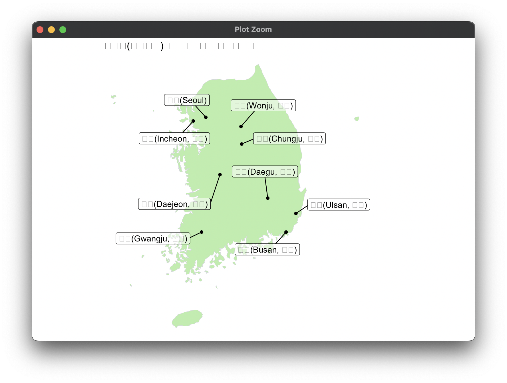
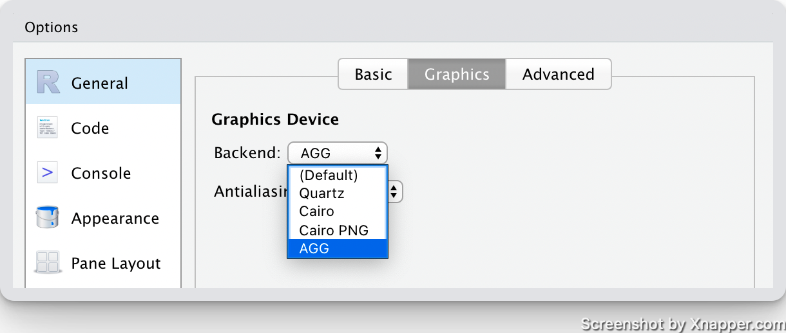
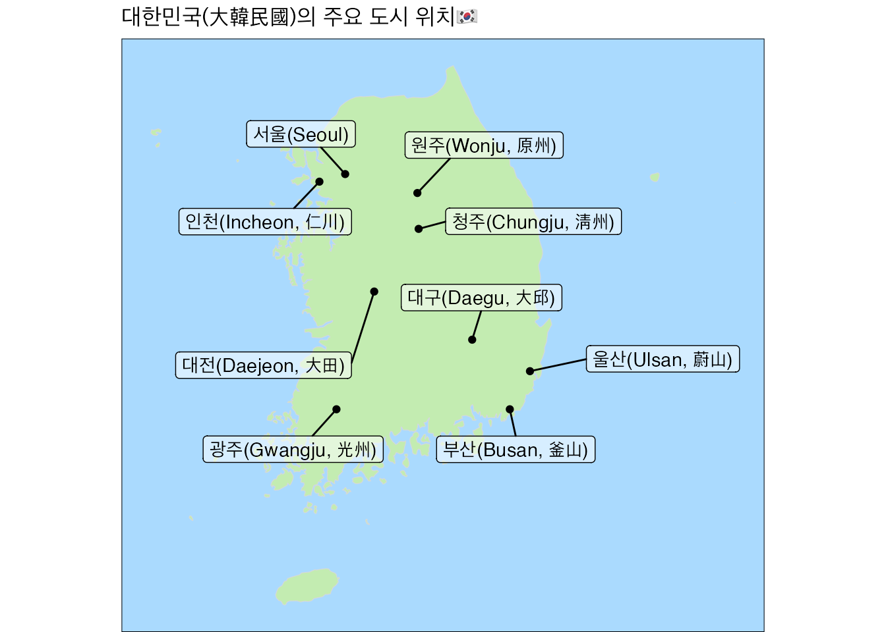

library(tibble)
ROK_city <- tribble(
~City, ~Lat, ~Lon,
"울산(Ulsan, 蔚山)", 35.549999, 129.316666,
"광주(Gwangju, 光州)", 35.166668, 126.916664,
"대전(Daejeon, 大田)", 36.351002, 127.385002,
"대구(Daegu, 大邱)", 35.866669, 128.600006,
"부산(Busan, 釜山)", 35.166668, 129.066666,
"청주(Chungju, 淸州)", 36.981304, 127.935905,
"원주(Wonju, 原州)", 37.342220, 127.920158,
"인천(Incheon, 仁川)", 37.456257, 126.705208,
"서울(Seoul)", 37.532600,127.024612
)한글이 깨진다
R에서 데이터를 잘 정제해서 시각화를 만들면 항상 한글의 벽에 부딫히곤 합니다. 한글을 인식하지 못하는 경우에는 인코딩을 해결하면 깨짐현상을 막을 수 있죠. 그렇다면 이미지를 추출할 때 한글이 깨지는 경우는 어떻게 할까요? 여기 그 예시가 있습니다. 대한민국의 주요 도시의 위치를 나타내기 위해 이런 데이터 셋을 만들어봤어요. tibble package에서 소개했던 tibble::tribble 함수를 이용해봤습니다. 세계화 시대에 맞춰 도시명에는 한글과 영어, 그리고 한자까지 포함했고요.
이 데이터셋을 바탕으로 지도를 그려봤습니다. 지도의 제목은 <🇰🇷대한민국(大韓民國)의 주요 도시 위치>로 해봤습니다. 그래프 제목에 이모지 정도는 써 줘야 그래도 웹 3.0 시대를 살고 있다고 할 수 있지 않겠습니까? 그렇게 만들어본 그래프의 모습입니다.

처참한 모습입니다. 영어를 제외한 모든 글자를 인식하지 못하는군요. 하지만 걱정하지 마세요. 해결책이 있습니다. 바로 Ragg package를 이용하면 됩니다.
Ragg Package
Ragg가 뭐지?

Rapp package는 Maxim Shemanarev라는 개발자가 개발한 AGG(Anti-Grain Geometry) 라이브러리를 기반으로 만들어진 R용 그래픽 패키지입니다. R과 AGG가 만나 Ragg package로 탄생했죠. Rag가 누더기, 조각이라는 뜻이 있는만큼 패키지 로고는 천 조각의 모습을 하고 있습니다. R의 그래픽 패키지로 가장 많이 알려진 건 grDevices package일 겁니다. 색상, 폰트를 자유롭게 이용하기 위해, 이제는 grDevices 대신 Ragg를 사용하면 됩니다. AGG는 grDevices에서 제공하는 표준 래스터 장치보다 더 높은 성능과 더 높은 품질을 제공하고 있습니다.
Rapp package 사용법
Rapp package를 사용하는 법은 아주 간단합니다. 일반적인 package를 설치하듯 R에 Rapp package를 설치하면 됩니다. intall.package("ragg") 이렇게 말이죠. devtools::install_github("r-lib/ragg")로 개발버전의 Rapp package를 사용해도 됩니다. 설치한 다음엔 RStudio의 옵션창으로 가 봅시다. 일반 옵션에서 Graphics 항목에서 Graphics Device를 기존 (Default)로 되어있던 것을 AGG로 변경하면 끝입니다. 아래 스크린샷을 참고하시면 이해하기 편할겁니다.

APP 환경에서 만드는 그래프
이제 다시 그래프를 만들어봅시다. 대한민국의 지도를 만들기 위해 rnaturalearth package의 ne_countries 함수를 이용했습니다. rnaturalearth package는 과학 데이터의 장벽을 낮추기 위한 프로젝트 중 하나인 ropensci package에 포함되어 있는데요, ropensci는 나중에 따로 다뤄보겠습니다. 여튼 rnaturalearth::ne_countries 함수를 사용해보겠습니다.
korea <- rnaturalearth::ne_countries(
scale = 10,
country = "South Korea",
returnclass = "sf"
)불러온 대한민국 데이터를 ggplot2::geom_sf에 넣어 지도를 그려보겠습니다.
library(ggplot2)
library(ragg)
ggplot() +
geom_sf(
data = korea,
fill = "#C3ECB1",
colour = "#D5D8DB",
size = 0.2
) +
ggrepel::geom_label_repel(
data = ROK_city,
aes(Lon, Lat, label = City),
fill = "#FFFFFF88",
box.padding = unit(5, "mm")
) +
geom_point(data = ROK_city, aes(Lon, Lat)) +
ggtitle("대한민국(大韓民國)의 주요 도시 위치🇰🇷") +
theme_void() +
theme(panel.background = element_rect("#AADAFE"),
plot.title = element_text(margin = margin(5, 5, 5, 5)))
짜잔~ rapp 패키지로 APP 환경을 이용하면 한글과 이모지, 한자가 깨지지 않는 이미지를 손쉽게 얻을 수 있습니다.